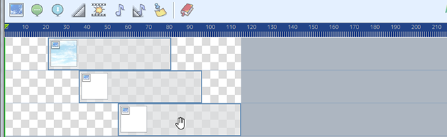

Timeline
On the timeline, all events can be arranged using time as an axis.
Part Descriptions

Toolbar
Add various events onto the timeline. Refer to [Event Types] for more details on each kind of event.
- ① Show Picture Event
- ② Show Text Event
- ③ Show Scrolling Text Event
- ④ Fade Screen Event
- ⑤ Screen Event
- ⑥ Audio Event
- ⑦ Fadeout Audio Event
- ⑧ Marker
- ⑨ Preset
Toolbar
Perform edits on the timeline.
- ⑩ Undo
- ⑪ Redo
- ⑫ New Lane
- ⑬ Playback
- Playback a preview of the event.
- ⑭ Stop
- Stop the event playback.
- ⑮ Shrink
- Shrink the Timeline
- ⑯ Expand
- Expand the Timeline
- ⑰ Copy AS Event
- Copy the timeline to the clipboard as an MV event.
Ruler
- ⑱ Cursor
- Change the event start point, marker insertion point, or preview position by dragging with the cursor.
Lane
- ⑲ Event Block
- The block where events can be arranged. Events can be moved via dragging.
Timeline Operations
- Move Events
-

Select an event by clicking it, and then drag to move it.
- Change an Event's Length
-

Drag either end of an eligible event to change its length.
- Multiple Event Selection
-

Select multiple events by holding down the Shift key while clicking events.